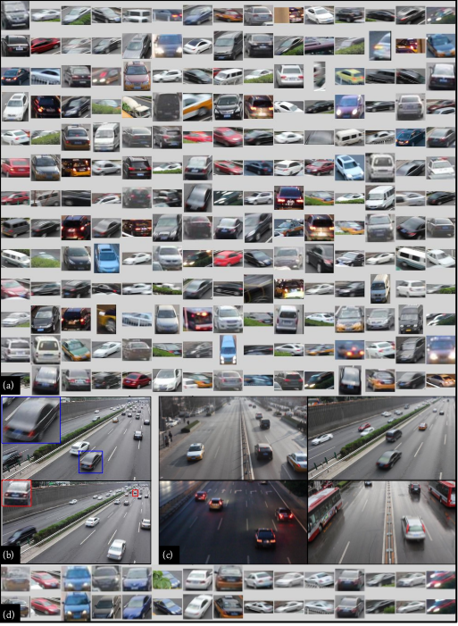

VRIC: Vehicle Re-Identificaton in Context
Summary

Example vehicle bounding-box and whole scene images of the
VRIC benchmark.
(a) Samples of vehicle bounding-box images.
(b) The near and far views in a wide-view traffic scene.
(c) UA-DETRAC video scenes with different illumination due to changing weather conditions (sunny, cloudy and rainy) and time (day and night).
(d) Vehicle matching pairs (each column) from some example test vehicle instances.